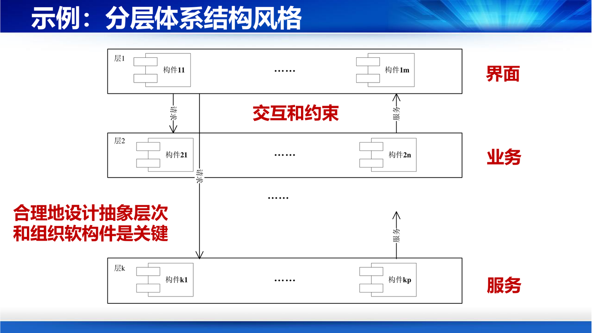
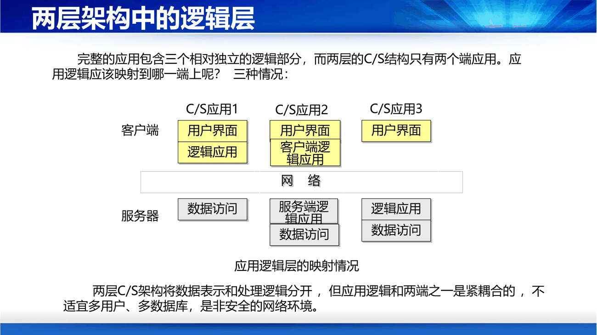
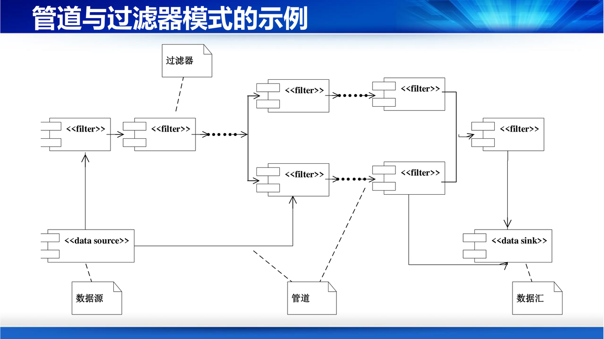
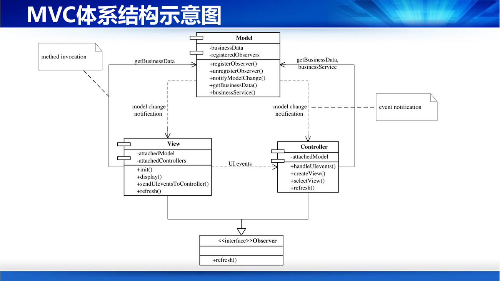
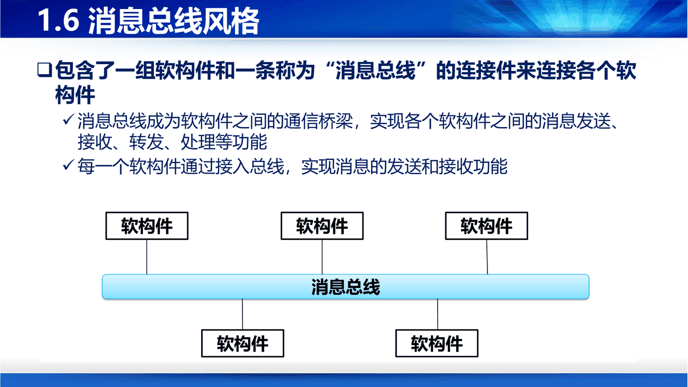
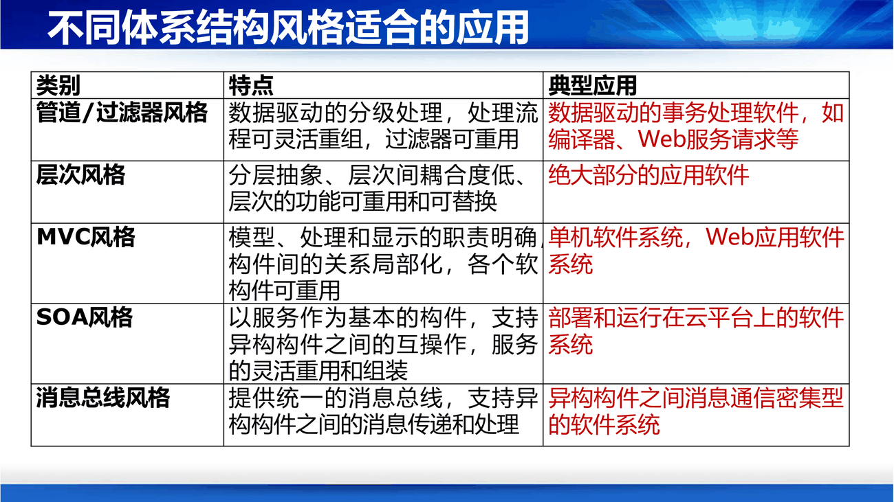

第 7 讲的前 34 页内容与第 6 讲第 56–91 页完全重复（同一套架构风格幻灯片）。课件这么安排的意思是：架构是设计的第一个也是最重要的决定，值得讲两遍。这一节在第 6 讲的基础上往下钻一层。
课件第 3–4 页反复问"何为抽象级别？"，这是理解分层风格的前提。
补抽象级别 = 这一层只关心"向上一层提供什么"，不关心"向下一层怎么实现"。 判定方法：如果两个构件所在的层次相同，那么它们应该用同一套词汇说话；如果一个在用"用户""订单""付款"，一个在用"表""索引""连接池"，它们就不在同一层。
分层风格的典型三段（PPT 第 4 页）：
| 层 | 职责 |
|---|---|
| 顶层 | 直接面向用户，提供交互界面 |
| 中间层 | 负责具体的业务处理 |
| 底层 | 提供基础性、公共性技术服务，接近硬件、OS 或 DBMS |
约束（PPT 第 5 页）：层与层之间是"请求—服务"关系；合理的抽象层次划分和软构件组织是关键。

补分层的代价必须说清楚：请求要穿过每一层，性能有损耗；而且"某一层能不能跳过下一层直接调更下层"是个永恒争论（严格分层不允许，松散分层允许）。严格分层换可替换性，松散分层换性能——这就是第 6 讲说的"设计就是权衡"。
C/S 结构（PPT 第 6 页）：一种分布式模型，采用"发请求、得结果"的模式。客户机向服务器发出请求（数据、网页、文件传输），服务器响应并回传结果，客户机再把结果格式化呈现给用户。
完整应用包含三个相对独立的逻辑部分：用户界面、应用逻辑、数据访问。两级 C/S 只有两个端，于是应用逻辑往哪放就有了三种选择（PPT 第 9 页）：
| 方案 | 客户端 | 服务器 | 特点 |
|---|---|---|---|
| C/S 应用 1 | 用户界面 + 逻辑应用 | 数据访问 | 胖客户端，逻辑在本地，升级要装每台机器 |
| C/S 应用 2 | 用户界面 | 逻辑应用 + 数据访问 | 瘦客户端，逻辑集中在服务器 |
| C/S 应用 3 | 用户界面 + 数据访问 | 逻辑应用 | 逻辑与数据分离，界面直连数据库（不安全） |
课件的结论：两层 C/S 架构将数据表示和处理逻辑分开，但应用逻辑和两端之一是紧耦合的，不适宜多用户、多数据库，是非安全的网络环境。

三级/多级模型（PPT 第 10 页）：
| 级 | 名称 | 职责 |
|---|---|---|
| 第一级 | 数据库管理结点 | 数据存储与管理 |
| 第二级（中间级） | 商业逻辑结点 | 应用中的程序逻辑和法则；会用到事务服务、消息服务等 |
| 第三级 | 用户界面级 | 界面呈现 |
补三级架构的本质是把"应用逻辑"从两端解放出来，单独成层。这一层后来演化成了应用服务器、Web 容器、微服务——形式上变了，动机没变：让逻辑独立于界面和数据，各自演化。 这也是"关注点分离"原则最成功的一次落地。
三要素（PPT 第 12 页）：
两种过滤器与同步问题（PPT 第 14 页），这是这一节最容易被问倒的地方：
| 类型 | 行为 |
|---|---|
| 主动过滤器 | 以循环方式不断从管道提取输入数据，并把输出压入管道 |
| 被动过滤器 | 管道把输入数据压入目标端过滤器，过滤器被动等待数据 |
设计考虑：
补这就是"生产者—消费者"模型的雏形：两个主动过滤器 = 两个生产者抢一个队列，必须有缓冲区；一主一被 = 生产者直接调消费者（同步调用）。"用不用队列"这个现代架构问题的答案，在这里就已经给出了。
经典示例（PPT 第 15 页）：编译器——源码 → 词法分析 → 语法分析 → 生成中间码 → 代码优化 → 可执行代码，每一步之间都是数据流。

特点：自然地解决具有数据流特征的软件需求；可独立更新、升级过滤器来实现系统的扩展和进化。
补"可独立升级过滤器"这句话有前提：前提是数据格式约定不变。如果词法分析的输出格式改了，下游全部要改。所以管道-过滤器的真正约束不是"松耦合"，而是"用统一的数据格式换取独立性"。
三类构件（PPT 第 18 页）：
| 构件 | 职责 |
|---|---|
| 黑板 | 保存问题求解过程中的状态数据，并提供这些数据的读写服务 |
| 知识源 | 根据黑板中的状态评价自身可应用性，做部分求解工作，把结果写回黑板 |
| 控制器 | 监视黑板中不断更新的状态，安排（多个）知识源的活动 |
运行循环（PPT 第 20 页）：控制器观察黑板状态 → 决定哪些知识源可能有贡献 → 调用它们的评价功能选出参与者 → 被选中的知识源基于黑板数据推进求解并更新黑板 → 控制器重复，直到结果满意。
优缺点（PPT 第 23 页）：
| 优点 | 缺点 |
|---|---|
| 可灵活升级和更换知识源与控制构件 | 为共享数据，各子系统必须有一致的数据视图，影响整体性能 |
| 知识源的独立性和可重用性好（知识源之间没有交互） | 子系统的改变可能导致数据结构改变 |
| 容错性和健壮性好（求解动作是探索性的，允许失败和纠错） | 统一的数据库结构（备份、安全、访问控制、恢复策略）会影响子系统效率 |
补黑板的本质是"共享数据 + 无直接通信"：知识源彼此不认识，只认识黑板。所以课件举的例子是协作软件 Notion、版本管理软件——它们都是"多人/多模块对同一份数据做增量修改"。优点和缺点都来自同一个设计：共享。要共享就要统一格式（性能代价），要共享就不能互相调用（独立性收益）。
三个构件（PPT 第 24 页）：
| 构件 | 职责 |
|---|---|
| 模型（Model） | 存储业务数据，提供业务逻辑处理功能 |
| 视图（View） | 向用户呈现模型中的数据 |
| 控制器（Controller） | 在接获模型的业务逻辑处理结果后，选择适当的视图作为对用户界面动作的响应 |
运行约束（PPT 第 26 页）——这段把三个构件的时序说清楚了，建议按顺序记：
补MVC 最精妙的地方是"模型不知道视图存在"：模型只负责"数据变了就广播"，谁在听、听了干什么，它不管。这个"观察者"机制让一模型多视图成为可能（同一份数据同时以表格和图表展示）。所以 MVC 的价值不在于"分三层"，而在于它把"变化的方向"解耦了：数据变化 → 通知；界面变化 → 不影响数据。

三个角色（PPT 第 27 页）：
协作流程（PPT 第 28 页）：提供方 → 注册和发布服务到注册中心；请求方 → 向注册中心查询服务；请求方 → 访问和获得服务。
特点（PPT 第 29 页）：服务提供方与请求方独立 → 支持松耦合；允许服务角色在运行时动态调整 → 极强的灵活性；提供 UDDI、SOAP、WSDL 等协议支持注册、描述、绑定 → 有效支持异构服务间交互。
补SOA 的三个缩写值得记一下：UDDI（ Universal Description, Discovery and Integration）负责"服务怎么被找到"，WSDL（Web Services Description Language）负责"服务长什么样"，SOAP 负责"怎么调"。它们是"注册—描述—绑定"三个动作的对应协议。
结构（PPT 第 31 页）：一组软构件 + 一条称为"消息总线"的连接件。总线是构件之间的通信桥梁，实现消息的发送、接收、转发、处理；每个构件通过接入总线实现收发。

技术背景（PPT 第 32 页）：流行的 ORB 标准有两种——CORBA（Common Object Request Broker Architecture）与 DCOM（Distributed Component Object Model）。"软件总线"的中间件即对象请求代理（ORB）。分布式对象结构具有很好的开放性和透明性，用户可以方便地在总线上添加、更新、删除组件对象。每个对象在逻辑上平等，互为对方提供服务：提供服务的对象是服务器，提出请求的是客户。
补总线风格解决的是"n 个构件两两通信要 n(n-1)/2 条连接"的问题：接上总线后只需要 n 条连接。代价是总线本身成为单点——总线挂了全挂，总线慢了全慢。这也是后来"企业服务总线（ESB）"被人诟病、转向"事件驱动/消息队列"的原因。
| 风格 | 特点 | 典型应用 |
|---|---|---|
| 管道/过滤器 | 数据驱动的分级处理，处理流程可灵活重组，过滤器可重用 | 数据驱动的事务处理软件，如编译器、Web 服务请求 |
| 层次风格 | 分层抽象、层次间耦合度低、层次功能可重用和可替换 | 绝大部分应用软件 |
| MVC | 模型、处理、显示职责明确，构件间关系局部化，构件可重用 | 单机软件系统、Web 应用 |
| SOA | 以服务为基本构件，支持异构构件互操作，服务可灵活重用和组装 | 部署和运行在云平台上的软件系统 |
| 消息总线 | 提供统一消息总线，支持异构构件间消息传递与处理 | 异构构件之间消息通信密集的系统 |
| 黑板 | 共享数据 + 无直接交互，适合探索性求解 | 协作编辑、版本管理、语音识别等 |
补选型的三问：①系统的主要特征是"数据流"还是"交互"还是"共享状态"？②要不要支持多客户端/异构？③变更主要发生在哪一层（界面变 → MVC/分层；处理步骤变 → 管道；参与者变 → SOA/总线）？
